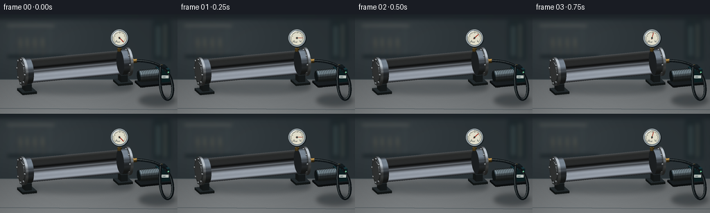
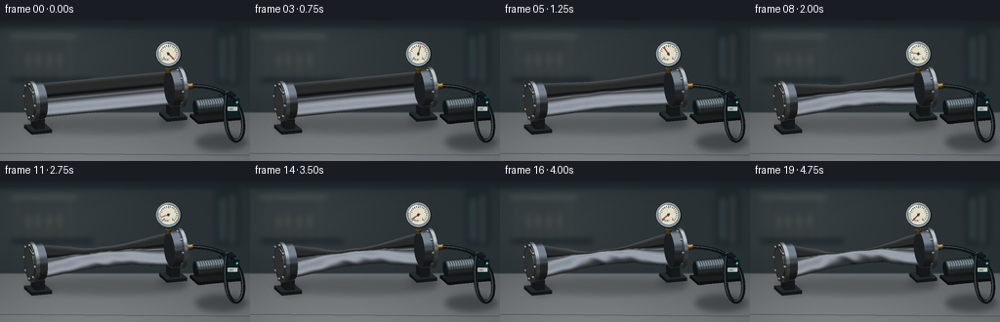

CODING AGENTS AS PIXEL WORLD MODELS
traex/GPT-6.1-Sol · mechanics_0025
点击播放 · 原生 RGB 像素
逐轮保存的候选
回放视频、检查图与代码变化。
每份候选均可单独播放。实际图片检查记录在下方工具轨迹中。
候选 01播放与检查图
点击播放 · 原生 RGB 像素


展开代码变化
--- 上一保存版本
+++ 本次保存版本
@@ -0,0 +1,258 @@
+"""Procedural vacuum-collapse time lapse; no input assets or renderer dependencies."""
+from pathlib import Path
+import numpy as np
+from PIL import Image, ImageDraw, ImageFilter, ImageFont
+import artifact_io
+
+ROOT=Path(__file__).resolve().parent
+W,H,S=256,144,3
+WW,HH=W*S,H*S
+rng=np.random.default_rng(12)
+V=np.array([-.30,-.91,.29]); V/=np.linalg.norm(V)
+RIGHT=np.cross([0,0,1],V); RIGHT/=np.linalg.norm(RIGHT)
+UP=np.cross(V,RIGHT)
+TARGET=np.array([0.,0.,1.0]); SCALE=25.5*S
+
+def project(p):
+ p=np.asarray(p)-TARGET
+ return np.stack([108*S+p@RIGHT*SCALE,83*S-p@UP*SCALE,p@V],axis=-1)
+
+def font(size):
+ return ImageFont.truetype('/usr/share/fonts/truetype/dejavu/DejaVuSans.ttf',int(size*S))
+
+# A fixed, soft-focus workshop environment.
+y,x=np.mgrid[0:HH,0:WW]; x=x/S; y=y/S
+wall=np.zeros((HH,WW,3),float)
+for k,c in enumerate([43,51,55]):
+ wall[:,:,k]=c+12*np.exp(-((x-42)/90)**2-((y-34)/52)**2)
+wall+=rng.normal(0,.45,(HH,WW,1))
+bg=Image.fromarray(np.clip(wall,0,255).astype('uint8'))
+d=ImageDraw.Draw(bg)
+def rect(box,fill): d.rectangle(tuple(int(a*S) for a in box),fill=fill)
+rect((0,0,256,7),(30,37,42)); rect((10,15,78,17),(90,94,91))
+rect((16,18,18,66),(58,67,70)); rect((71,18,73,65),(58,67,70))
+rect((11,59,95,63),(25,34,38)); rect((220,8,246,66),(31,41,45))
+rect((225,17,231,60),(52,65,68)); rect((236,14,240,63),(61,68,67))
+for xx in [28,38,49,60]:
+ rect((xx,41,xx+4,59),(59,64,64)); rect((xx,34,xx+2,46),(91,91,79))
+bg=bg.filter(ImageFilter.GaussianBlur(2.7*S))
+a=np.asarray(bg).copy().astype(float)
+floor=y>94
+base=96+22*(y-94)/50+10*np.exp(-((x-63)/105)**2)
+for k,off in enumerate([1,5,7]): a[:,:,k]=np.where(floor,base+off,a[:,:,k])
+a+=rng.normal(0,.55,(HH,WW,1))*floor[:,:,None]
+bg=Image.fromarray(np.clip(a,0,255).astype('uint8'))
+d=ImageDraw.Draw(bg)
+d.line([(0,94*S),(256*S,94*S)],fill=(64,74,78),width=S)
+d.line([(0,136*S),(256*S,138*S)],fill=(81,91,96),width=S)
+# Soft grounding shadows, beneath the pipe, mounting blocks and pump.
+sh=Image.new('RGBA',(WW,HH)); sd=ImageDraw.Draw(sh)
+for box,alpha in [((26,99,191,116),62),((28,104,56,116),85),((161,97,192,110),90),((200,116,253,133),110)]:
+ sd.ellipse(tuple(int(v*S) for v in box),fill=(15,23,27,alpha))
+sh=sh.filter(ImageFilter.GaussianBlur(3*S)); bg=Image.alpha_composite(bg.convert('RGBA'),sh).convert('RGB')
+
+class Renderer:
+ def __init__(self,background):
+ self.rgb=np.array(background).astype(float)
+ self.depth=np.full((HH,WW),-1e9)
+ def mesh(self,p,tri,norm=None,color=(150,155,160),metal=False,rough=.0):
+ p=np.asarray(p,float); tri=np.asarray(tri,int)
+ screen=project(p)
+ if norm is None:
+ norm=np.zeros_like(p)
+ ns=np.cross(p[tri[:,1]]-p[tri[:,0]],p[tri[:,2]]-p[tri[:,0]])
+ for j in range(3): np.add.at(norm,tri[:,j],ns)
+ norm=norm/np.maximum(np.linalg.norm(norm,axis=1,keepdims=True),1e-8)
+ light=np.array([-.4,-.5,.82]); light/=np.linalg.norm(light)
+ nd=np.maximum(norm@light,0)
+ if metal:
+ # Broad rectangular studio reflections on real curved normals.
+ refl=2*(norm@V)[:,None]*norm-V
+ sky=np.exp(-((refl[:,2]-.86)/.29)**2)
+ strip=np.exp(-((refl[:,2]-.28)/.075)**2)*np.clip(-refl[:,1],0,1)
+ dark=np.exp(-((refl[:,2]+.17)/.18)**2)
+ shine=(.27+.45*nd+.64*sky+.55*strip-.18*dark)
+ half=(light+V); half/=np.linalg.norm(half)
+ spec=np.maximum(norm@half,0)**65
+ c=np.asarray(color)[None,:]*shine[:,None]+spec[:,None]*90
+ c+=np.stack([refl[:,2]*4,refl[:,2]*5,refl[:,2]*8],axis=-1)
+ if rough:
+ c+=(np.sin(p[:,0]*96+p[:,2]*59)*np.sin(p[:,1]*83))[:,None]*rough
+ else:
+ c=np.asarray(color)[None,:]*(.40+.62*nd[:,None])
+ half=(light+V); half/=np.linalg.norm(half)
+ c+=20*np.maximum(norm@half,0)[:,None]**30
+ c=np.clip(c,0,255)
+ for t in tri:
+ pp=screen[t]; cc=c[t]
+ # Flat back-face rejection using world positions, not smoothed normals.
+ fn=np.cross(p[t[1]]-p[t[0]],p[t[2]]-p[t[0]])
+ if fn@V<=0: continue
+ xmin=max(0,int(np.floor(pp[:,0].min()))); xmax=min(WW-1,int(np.ceil(pp[:,0].max())))
+ ymin=max(0,int(np.floor(pp[:,1].min()))); ymax=min(HH-1,int(np.ceil(pp[:,1].max())))
+ if xmin>xmax or ymin>ymax: continue
+ a,b,cz=pp
+ den=(b[1]-cz[1])*(a[0]-cz[0])+(cz[0]-b[0])*(a[1]-cz[1])
+ if abs(den)<1e-8:continue
+ yy,xx=np.mgrid[ymin:ymax+1,xmin:xmax+1]
+ w0=((b[1]-cz[1])*(xx+.5-cz[0])+(cz[0]-b[0])*(yy+.5-cz[1]))/den
+ w1=((cz[1]-a[1])*(xx+.5-cz[0])+(a[0]-cz[0])*(yy+.5-cz[1]))/den
+ w2=1-w0-w1
+ zz=w0*a[2]+w1*b[2]+w2*cz[2]
+ depth=self.depth[ymin:ymax+1,xmin:xmax+1]
+ hit=(w0>=-1e-5)&(w1>=-1e-5)&(w2>=-1e-5)&(zz>depth)
+ if not np.any(hit): continue
+ out=self.rgb[ymin:ymax+1,xmin:xmax+1]
+ cols=w0[:,:,None]*cc[0]+w1[:,:,None]*cc[1]+w2[:,:,None]*cc[2]
+ out[hit]=cols[hit];depth[hit]=zz[hit]
+ def box(self,lo,hi,color,metal=False):
+ lo=np.array(lo); hi=np.array(hi)
+ p=np.array([[xx,yy,zz] for xx in [lo[0],hi[0]] for yy in [lo[1],hi[1]] for zz in [lo[2],hi[2]]])
+ faces=[[0,1,3,2],[4,6,7,5],[0,4,5,1],[2,3,7,6],[0,2,6,4],[1,5,7,3]]
+ # Face-specific normals keep the bevel-free edges crisp.
+ for ids in faces:self.mesh(p[ids],[[0,1,2],[0,2,3]],color=color,metal=metal)
+ def cylinder(self,origin,axis,length,radius,color,metal=True,n=48):
+ ax=np.asarray(axis,float); ax/=np.linalg.norm(ax)
+ o=np.asarray(origin,float)
+ u=np.cross(ax,[0,0,1] if abs(ax[2])<.9 else [0,1,0]);u/=np.linalg.norm(u)
+ v=np.cross(ax,u)
+ theta=np.linspace(0,2*np.pi,n,endpoint=False)
+ normals=np.cos(theta)[:,None]*u+np.sin(theta)[:,None]*v
+ p=np.concatenate([o+radius*normals,o+length*ax+radius*normals])
+ nr=np.concatenate([normals,normals])
+ tris=[]
+ for i in range(n):
+ j=(i+1)%n;tris.extend([[i,j,n+j],[i,n+j,n+i]])
+ self.mesh(p,tris,nr,color,metal)
+ for end,sign in [(o,-1),(o+length*ax,1)]:
+ cp=np.concatenate([end[None,:],end+radius*normals])
+ tr=[[0,(i+1)%n+1,i+1] if sign<0 else [0,i+1,(i+1)%n+1] for i in range(n)]
+ self.mesh(cp,tr,np.tile(sign*ax,(n+1,1)),color,metal)
+ def image(self):return Image.fromarray(np.uint8(np.clip(self.rgb,0,255)))
+
+# Static industrial fittings. Flat polished closed disks at both ends.
+r=Renderer(bg)
+for sx in [-2.85,2.86]:
+ r.box([sx-.43,-.51,.06],[sx+.43,.50,.19],(55,66,70),True)
+ r.box([sx-.20,-.29,.18],[sx+.20,.30,.59],(62,73,77),True)
+ r.cylinder([sx-.17,0,1.3],[1,0,0],.34,.74,(92,101,109))
+for sx in [-3.18,3.08]:
+ r.cylinder([sx,0,1.3],[1,0,0],.15,.82,(144,150,154))
+ r.cylinder([sx-.025,0,1.3],[1,0,0],.025,.72,(108,115,119))
+ r.cylinder([sx-.047,0,1.3],[1,0,0],.027,.60,(153,158,161))
+ for th in np.linspace(0,2*np.pi,8,endpoint=False):
+ r.cylinder([sx-.09,.70*np.cos(th),1.3+.70*np.sin(th)],[1,0,0],.085,.071,(155,160,162),n=6)
+# Right extraction port, with a machined brass adapter and knurled nut.
+r.cylinder([3.2,0,1.3],[1,0,0],.49,.115,(152,118,61))
+r.cylinder([3.29,0,1.3],[1,0,0],.17,.19,(169,131,65),n=6)
+r.cylinder([2.66,0,1.95],[0,0,1],.53,.065,(155,127,69))
+r.cylinder([2.66,0,1.97],[0,0,1],.17,.13,(176,139,68),n=6)
+# Compact powered vacuum pump, with a finned motor and cast blue housing.
+r.box([3.55,-1.10,.03],[5.50,-.05,.15],(39,47,51),True)
+for xx in [3.65,5.27]:
+ r.box([xx,-1.04,.00],[xx+.16,-.85,.12],(28,32,34))
+r.box([4.76,-.90,.16],[5.37,-.13,.89],(40,93,102),True)
+r.cylinder([3.65,-.54,.54],[1,0,0],1.12,.33,(95,107,111))
+for xx in np.arange(3.76,4.71,.10):
+ r.cylinder([xx,-.54,.54],[1,0,0],.025,.367,(78,91,96))
+r.cylinder([3.61,-.54,.54],[1,0,0],.085,.30,(51,66,73))
+r.cylinder([4.96,-.52,.86],[0,0,1],.22,.10,(154,124,66))
+r.box([4.80,-.77,.93],[5.27,-.20,1.00],(24,34,39))
+static_rgb=r.rgb.copy();static_depth=r.depth.copy()
+
+# Shape of the pipe: a progressively flattened, folded thin shell.
+NX,NT=76,96
+xx=np.linspace(-3.06,3.075,NX)
+th=np.linspace(0,2*np.pi,NT,endpoint=False)
+X,T=np.meshgrid(xx,th,indexing='ij')
+tri=[]
+for i in range(NX-1):
+ for j in range(NT):
+ a=i*NT+j;b=i*NT+(j+1)%NT;c=(i+1)*NT+(j+1)%NT;dd=(i+1)*NT+j
+ # Outward winding for x-then-angle parametrisation.
+ tri.extend([[a,dd,c],[a,c,b]])
+tri=np.array(tri)
+
+def body(collapse):
+ env=np.sin(np.pi*(X-xx[0])/(xx[-1]-xx[0]))**1.7
+ # A central buckle begins abruptly, then propagates along the sealed tube.
+ e=collapse*env
+ sy=.68*(1+.18*e)
+ sz=.68*(1-.77*e)
+ Y=sy*np.cos(T)
+ Z=sz*np.sin(T)*(1-.38*e*np.cos(T)**2)
+ # Rounded longitudinal wrinkles tighten into two deep creases.
+ crease=(.044*np.sin(3.8*X+.9)+.022*np.sin(8.3*X+1.7))*e**1.6
+ Z+=crease*np.sin(T)**3
+ Z+=-.09*e+.016*e*np.sin(1.6*X)
+ Y+=.026*e*np.sin(5.0*X+2*T)
+ p=np.stack([X,Y,Z+1.3],axis=-1)
+ dx=np.gradient(p,xx,axis=0)
+ dt=(np.roll(p,-1,axis=1)-np.roll(p,1,axis=1))/(4*np.pi/NT)
+ n=np.cross(dt,dx);n/=np.maximum(np.linalg.norm(n,axis=-1,keepdims=True),1e-8)
+ return p.reshape(-1,3),n.reshape(-1,3)
+
+# Draw slender rubber hose and its gloss streak using a cubic spline.
+def bezier(points,n=160):
+ p=np.array(points,float);t=np.linspace(0,1,n)[:,None]
+ return ((1-t)**3*p[0]+3*(1-t)**2*t*p[1]+3*(1-t)*t*t*p[2]+t**3*p[3])*S
+
+frames=[]
+for fi in range(20):
+ progress=fi/19
+ collapse=np.clip((progress-.15)/.80,0,1)
+ collapse=collapse**.78
+ rr=Renderer(bg);rr.rgb=static_rgb.copy();rr.depth=static_depth.copy()
+ p,n=body(collapse)
+ rr.mesh(p,tri,n,(167,175,184),True,rough=1.0)
+ im=rr.image();d=ImageDraw.Draw(im)
+ # Rubber vacuum line from the only outlet to the pump.
+ start=project([3.7,0,1.3])[:2]/S
+ end=project([4.96,-.52,1.07])[:2]/S
+ vibration=.15*np.sin(fi*2.9)
+ pts1=bezier([start,[239,68+vibration],[250,89],[249,111]])
+ pts2=bezier([[249,111],[248,132],[225,130],end])
+ points=[tuple(k) for k in np.concatenate([pts1,pts2])]
+ d.line(points,fill=(18,24,27),width=int(4.5*S),joint='curve')
+ # An offset silver-grey highlight conveys round matte rubber, not wire.
+ d.line([(a-.55*S,b-.6*S) for a,b in points],fill=(76,84,85),width=S,joint='curve')
+ d.line([(a+.65*S,b+.45*S) for a,b in points],fill=(12,17,20),width=S,joint='curve')
+ # Pressure gauge: closed housing, warm white dial, needle dropping into vacuum.
+ center=project([2.66,0,2.75])[:2]/S
+ gx,gy=center; rad=12.2
+ def ellipse(cx,cy,rr,fill,outline=None,width=1):
+ d.ellipse([(cx-rr)*S,(cy-rr)*S,(cx+rr)*S,(cy+rr)*S],fill=fill,outline=outline,width=int(width*S))
+ ellipse(gx+.6,gy+.8,rad+.7,(25,32,36))
+ ellipse(gx,gy,rad,(132,144,150),(186,194,196),.7)
+ ellipse(gx,gy,rad-1.8,(228,225,206),(46,58,63),.55)
+ # Scale increases clockwise from near vacuum on the lower left to ambient at right.
+ for i in range(21):
+ angle=np.deg2rad(135+i*13.5)
+ r1=rad-3.1;r2=r1-(2.2 if i%5==0 else 1.15)
+ d.line([(S*(gx+r1*np.cos(angle)),S*(gy+r1*np.sin(angle))),(S*(gx+r2*np.cos(angle)),S*(gy+r2*np.sin(angle)))],fill=(61,67,65),width=S//2+1)
+ for text,ang in [('0',135),('1',405)]:
+ aa=np.deg2rad(ang);d.text((S*(gx+6.2*np.cos(aa)-1.2),S*(gy+6.2*np.sin(aa)-2)),text,font=font(3.1),fill=(52,61,63))
+ d.text(((gx-4.1)*S,(gy+3.7)*S),'bar',font=font(3.0),fill=(70,75,73))
+ angle=np.deg2rad(405-270*(1-np.exp(-3.6*progress))/(1-np.exp(-3.6)))
+ tip=(S*(gx+7.9*np.cos(angle)),S*(gy+7.9*np.sin(angle)))
+ tail=(S*(gx-2*np.cos(angle)),S*(gy-2*np.sin(angle)))
+ d.line([tail,tip],fill=(160,49,34),width=int(1.0*S))
+ ellipse(gx,gy,1.2,(58,62,59))
+ # Gauge glass glint and pump's steady running LED.
+ d.arc([(gx-10.3)*S,(gy-10.3)*S,(gx+10.3)*S,(gy+10.3)*S],195,263,fill=(255,255,244),width=S)
+ led=project([5.26,-.915,.73])[:2]
+ d.ellipse((led[0]-S,led[1]-S,led[0]+S,led[1]+S),fill=(113,207,155))
+ # Small identifying plate on the pump, no added explanatory overlays.
+ label=project([5.06,-.916,.48])[:2]
+ d.rounded_rectangle((label[0]-5*S,label[1]-2*S,label[0]+5*S,label[1]+2*S),radius=S/2,fill=(196,204,199))
+ d.text((label[0]-4.0*S,label[1]-1.5*S),'VAC',font=font(2.7),fill=(38,61,64))
+ # Filmic, photographic softness with modest contrast and vignetting.
+ im=im.resize((W,H),Image.Resampling.LANCZOS)
+ arr=np.asarray(im).astype(float)
+ yy,xxx=np.mgrid[0:H,0:W]
+ vign=1-.11*((xxx-127)/164)**2-.07*((yy-72)/105)**2
+ arr=arr*vign[:,:,None]
+ frames.append(np.clip(arr,0,255).astype(np.uint8))
+ print('frame',fi,flush=True)
+artifact_io.save(np.array(frames),ROOT)
+print('Saved 20 RGB frames and player to',ROOT)
可观测工具轨迹
实际执行的命令与返回图片。
命令 1exit 0
/bin/bash -lc "ls -la && cat prompt.txt && printf '\\n--- RULES ---\\n' && cat GENERATION_RULES.md && printf '\\n--- SPEC ---\\n' && cat task_spec.json"
命令 2exit 0
/bin/bash -lc "cat artifact_io.py && python - <<'PY'
import numpy,PIL
print('numpy/PIL ready')
PY"命令 3exit 0
/bin/bash -lc 'fc-list | head -8'
命令 4exit 0
/bin/bash -lc "cat > generate.py <<'PY'
\"\"\"Procedural vacuum-collapse time lapse; no input assets or renderer dependencies.\"\"\"
from pathlib import Path
import numpy as np
from PIL import Image, ImageDraw, ImageFilter, ImageFont
import artifact_io
ROOT=Path(__file__).resolve().parent
W,H,S=256,144,3
WW,HH=W*S,H*S
rng=np.random.default_rng(12)
V=np.array([-.30,-.91,.29]); V/=np.linalg.norm(V)
RIGHT=np.cross([0,0,1],V); RIGHT/=np.linalg.norm(RIGHT)
UP=np.cross(V,RIGHT)
TARGET=np.array([0.,0.,1.0]); SCALE=25.5*S
def project(p):
p=np.asarray(p)-TARGET
return np.stack([108*S+p@RIGHT*SCALE,83*S-p@UP*SCALE,p@V],axis=-1)
def font(size):
return ImageFont.truetype('/usr/share/fonts/truetype/dejavu/DejaVuSans.ttf',int(size*S))
# A fixed, soft-focus workshop environment.
y,x=np.mgrid[0:HH,0:WW]; x=x/S; y=y/S
wall=np.zeros((HH,WW,3),float)
for k,c in enumerate([43,51,55]):
wall[:,:,k]=c+12*np.exp(-((x-42)/90)**2-((y-34)/52)**2)
wall+=rng.normal(0,.45,(HH,WW,1))
bg=Image.fromarray(np.clip(wall,0,255).astype('uint8'))
d=ImageDraw.Draw(bg)
def rect(box,fill): d.rectangle(tuple(int(a*S) for a in box),fill=fill)
rect((0,0,256,7),(30,37,42)); rect((10,15,78,17),(90,94,91))
rect((16,18,18,66),(58,67,70)); rect((71,18,73,65),(58,67,70))
rect((11,59,95,63),(25,34,38)); rect((220,8,246,66),(31,41,45))
rect((225,17,231,60),(52,65,68)); rect((236,14,240,63),(61,68,67))
for xx in [28,38,49,60]:
rect((xx,41,xx+4,59),(59,64,64)); rect((xx,34,xx+2,46),(91,91,79))
bg=bg.filter(ImageFilter.GaussianBlur(2.7*S))
a=np.asarray(bg).copy().astype(float)
floor=y>94
base=96+22*(y-94)/50+10*np.exp(-((x-63)/105)**2)
for k,off in enumerate([1,5,7]): a[:,:,k]=np.where(floor,base+off,a[:,:,k])
a+=rng.normal(0,.55,(HH,WW,1))*floor[:,:,None]
bg=Image.fromarray(np.clip(a,0,255).astype('uint8'))
d=ImageDraw.Draw(bg)
d.line([(0,94*S),(256*S,94*S)],fill=(64,74,78),width=S)
d.line([(0,136*S),(256*S,138*S)],fill=(81,91,96),width=S)
# Soft grounding shadows, beneath the pipe, mounting blocks and pump.
sh=Image.new('RGBA',(WW,HH)); sd=ImageDraw.Draw(sh)
for box,alpha in [((26,99,191,116),62),((28,104,56,116),85),((161,97,192,110),90),((200,116,253,133),110)]:
sd.ellipse(tuple(int(v*S) for v in box),fill=(15,23,27,alpha))
sh=sh.filter(ImageFilter.GaussianBlur(3*S)); bg=Image.alpha_composite(bg.convert('RGBA'),sh).convert('RGB')
class Renderer:
def __init__(self,background):
self.rgb=np.array(background).astype(float)
self.depth=np.full((HH,WW),-1e9)
def mesh(self,p,tri,norm=None,color=(150,155,160),metal=False,rough=.0):
p=np.asarray(p,float); tri=np.asarray(tri,int)
screen=project(p)
if norm is None:
norm=np.zeros_like(p)
ns=np.cross(p[tri[:,1]]-p[tri[:,0]],p[tri[:,2]]-p[tri[:,0]])
for j in range(3): np.add.at(norm,tri[:,j],ns)
norm=norm/np.maximum(np.linalg.norm(norm,axis=1,keepdims=True),1e-8)
light=np.array([-.4,-.5,.82]); light/=np.linalg.norm(light)
nd=np.maximum(norm@light,0)
if metal:
# Broad rectangular studio reflections on real curved normals.
refl=2*(norm@V)[:,None]*norm-V
sky=np.exp(-((refl[:,2]-.86)/.29)**2)
strip=np.exp(-((refl[:,2]-.28)/.075)**2)*np.clip(-refl[:,1],0,1)
dark=np.exp(-((refl[:,2]+.17)/.18)**2)
shine=(.27+.45*nd+.64*sky+.55*strip-.18*dark)
half=(light+V); half/=np.linalg.norm(half)
spec=np.maximum(norm@half,0)**65
c=np.asarray(color)[None,:]*shine[:,None]+spec[:,None]*90
c+=np.stack([refl[:,2]*4,refl[:,2]*5,refl[:,2]*8],axis=-1)
if rough:
c+=(np.sin(p[:,0]*96+p[:,2]*59)*np.sin(p[:,1]*83))[:,None]*rough
else:
c=np.asarray(color)[None,:]*(.40+.62*nd[:,None])
half=(light+V); half/=np.linalg.norm(half)
c+=20*np.maximum(norm@half,0)[:,None]**30
c=np.clip(c,0,255)
for t in tri:
pp=screen[t]; cc=c[t]
# Flat back-face rejection using world positions, not smoothed normals.
fn=np.cross(p[t[1]]-p[t[0]],p[t[2]]-p[t[0]])
if fn@V<=0: continue
xmin=max(0,int(np.floor(pp[:,0].min()))); xmax=min(WW-1,int(np.ceil(pp[:,0].max())))
ymin=max(0,int(np.floor(pp[:,1].min()))); ymax=min(HH-1,int(np.ceil(pp[:,1].max())))
if xmin>xmax or ymin>ymax: continue
a,b,cz=pp
den=(b[1]-cz[1])*(a[0]-cz[0])+(cz[0]-b[0])*(a[1]-cz[1])
if abs(den)<1e-8:continue
yy,xx=np.mgrid[ymin:ymax+1,xmin:xmax+1]
w0=((b[1]-cz[1])*(xx+.5-cz[0])+(cz[0]-b[0])*(yy+.5-cz[1]))/den
w1=((cz[1]-a[1])*(xx+.5-cz[0])+(a[0]-cz[0])*(yy+.5-cz[1]))/den
w2=1-w0-w1
zz=w0*a[2]+w1*b[2]+w2*cz[2]
depth=self.depth[ymin:ymax+1,xmin:xmax+1]
hit=(w0>=-1e-5)&(w1>=-1e-5)&(w2>=-1e-5)&(zz>depth)
if not np.any(hit): continue
out=self.rgb[ymin:ymax+1,xmin:xmax+1]
cols=w0[:,:,None]*cc[0]+w1[:,:,None]*cc[1]+w2[:,:,None]*cc[2]
out[hit]=cols[hit];depth[hit]=zz[hit]
def box(self,lo,hi,color,metal=False):
lo=np.array(lo); hi=np.array(hi)
p=np.array([[xx,yy,zz] for xx in [lo[0],hi[0]] for yy in [lo[1],hi[1]] for zz in [lo[2],hi[2]]])
faces=[[0,1,3,2],[4,6,7,5],[0,4,5,1],[2,3,7,6],[0,2,6,4],[1,5,7,3]]
# Face-specific normals keep the bevel-free edges crisp.
for ids in faces:self.mesh(p[ids],[[0,1,2],[0,2,3]],color=color,metal=metal)
def cylinder(self,origin,axis,length,radius,color,metal=True,n=48):
ax=np.asarray(axis,float); ax/=np.linalg.norm(ax)
o=np.asarray(origin,float)
u=np.cross(ax,[0,0,1] if abs(ax[2])<.9 else [0,1,0]);u/=np.linalg.norm(u)
v=np.cross(ax,u)
theta=np.linspace(0,2*np.pi,n,endpoint=False)
normals=np.cos(theta)[:,None]*u+np.sin(theta)[:,None]*v
p=np.concatenate([o+radius*normals,o+length*ax+radius*normals])
nr=np.concatenate([normals,normals])
tris=[]
for i in range(n):
j=(i+1)%n;tris.extend([[i,j,n+j],[i,n+j,n+i]])
self.mesh(p,tris,nr,color,metal)
for end,sign in [(o,-1),(o+length*ax,1)]:
cp=np.concatenate([end[None,:],end+radius*normals])
tr=[[0,(i+1)%n+1,i+1] if sign<0 else [0,i+1,(i+1)%n+1] for i in range(n)]
self.mesh(cp,tr,np.tile(sign*ax,(n+1,1)),color,metal)
def image(self):return Image.fromarray(np.uint8(np.clip(self.rgb,0,255)))
# Static industrial fittings. Flat polished closed disks at both ends.
r=Renderer(bg)
for sx in [-2.85,2.86]:
r.box([sx-.43,-.51,.06],[sx+.43,.50,.19],(55,66,70),True)
r.box([sx-.20,-.29,.18],[sx+.20,.30,.59],(62,73,77),True)
r.cylinder([sx-.17,0,1.3],[1,0,0],.34,.74,(92,101,109))
for sx in [-3.18,3.08]:
r.cylinder([sx,0,1.3],[1,0,0],.15,.82,(144,150,154))
r.cylinder([sx-.025,0,1.3],[1,0,0],.025,.72,(108,115,119))
r.cylinder([sx-.047,0,1.3],[1,0,0],.027,.60,(153,158,161))
for th in np.linspace(0,2*np.pi,8,endpoint=False):
r.cylinder([sx-.09,.70*np.cos(th),1.3+.70*np.sin(th)],[1,0,0],.085,.071,(155,160,162),n=6)
# Right extraction port, with a machined brass adapter and knurled nut.
r.cylinder([3.2,0,1.3],[1,0,0],.49,.115,(152,118,61))
r.cylinder([3.29,0,1.3],[1,0,0],.17,.19,(169,131,65),n=6)
r.cylinder([2.66,0,1.95],[0,0,1],.53,.065,(155,127,69))
r.cylinder([2.66,0,1.97],[0,0,1],.17,.13,(176,139,68),n=6)
# Compact powered vacuum pump, with a finned motor and cast blue housing.
r.box([3.55,-1.10,.03],[5.50,-.05,.15],(39,47,51),True)
for xx in [3.65,5.27]:
r.box([xx,-1.04,.00],[xx+.16,-.85,.12],(28,32,34))
r.box([4.76,-.90,.16],[5.37,-.13,.89],(40,93,102),True)
r.cylinder([3.65,-.54,.54],[1,0,0],1.12,.33,(95,107,111))
for xx in np.arange(3.76,4.71,.10):
r.cylinder([xx,-.54,.54],[1,0,0],.025,.367,(78,91,96))
r.cylinder([3.61,-.54,.54],[1,0,0],.085,.30,(51,66,73))
r.cylinder([4.96,-.52,.86],[0,0,1],.22,.10,(154,124,66))
r.box([4.80,-.77,.93],[5.27,-.20,1.00],(24,34,39))
static_rgb=r.rgb.copy();static_depth=r.depth.copy()
# Shape of the pipe: a progressively flattened, folded thin shell.
NX,NT=76,96
xx=np.linspace(-3.06,3.075,NX)
th=np.linspace(0,2*np.pi,NT,endpoint=False)
X,T=np.meshgrid(xx,th,indexing='ij')
tri=[]
for i in range(NX-1):
for j in range(NT):
a=i*NT+j;b=i*NT+(j+1)%NT;c=(i+1)*NT+(j+1)%NT;dd=(i+1)*NT+j
# Outward winding for x-then-angle parametrisation.
tri.extend([[a,dd,c],[a,c,b]])
tri=np.array(tri)
def body(collapse):
env=np.sin(np.pi*(X-xx[0])/(xx[-1]-xx[0]))**1.7
# A central buckle begins abruptly, then propagates along the sealed tube.
e=collapse*env
sy=.68*(1+.18*e)
sz=.68*(1-.77*e)
Y=sy*np.cos(T)
Z=sz*np.sin(T)*(1-.38*e*np.cos(T)**2)
# Rounded longitudinal wrinkles tighten into two deep creases.
crease=(.044*np.sin(3.8*X+.9)+.022*np.sin(8.3*X+1.7))*e**1.6
Z+=crease*np.sin(T)**3
Z+=-.09*e+.016*e*np.sin(1.6*X)
Y+=.026*e*np.sin(5.0*X+2*T)
p=np.stack([X,Y,Z+1.3],axis=-1)
dx=np.gradient(p,xx,axis=0)
dt=(np.roll(p,-1,axis=1)-np.roll(p,1,axis=1))/(4*np.pi/NT)
n=np.cross(dt,dx);n/=np.maximum(np.linalg.norm(n,axis=-1,keepdims=True),1e-8)
return p.reshape(-1,3),n.reshape(-1,3)
# Draw slender rubber hose and its gloss streak using a cubic spline.
def bezier(points,n=160):
p=np.array(points,float);t=np.linspace(0,1,n)[:,None]
return ((1-t)**3*p[0]+3*(1-t)**2*t*p[1]+3*(1-t)*t*t*p[2]+t**3*p[3])*S
frames=[]
for fi in range(20):
progress=fi/19
collapse=np.clip((progress-.15)/.80,0,1)
collapse=collapse**.78
rr=Renderer(bg);rr.rgb=static_rgb.copy();rr.depth=static_depth.copy()
p,n=body(collapse)
rr.mesh(p,tri,n,(167,175,184),True,rough=1.0)
im=rr.image();d=ImageDraw.Draw(im)
# Rubber vacuum line from the only outlet to the pump.
start=project([3.7,0,1.3])[:2]/S
end=project([4.96,-.52,1.07])[:2]/S
vibration=.15*np.sin(fi*2.9)
pts1=bezier([start,[239,68+vibration],[250,89],[249,111]])
pts2=bezier([[249,111],[248,132],[225,130],end])
points=[tuple(k) for k in np.concatenate([pts1,pts2])]
d.line(points,fill=(18,24,27),width=int(4.5*S),joint='curve')
# An offset silver-grey highlight conveys round matte rubber, not wire.
d.line([(a-.55*S,b-.6*S) for a,b in points],fill=(76,84,85),width=S,joint='curve')
d.line([(a+.65*S,b+.45*S) for a,b in points],fill=(12,17,20),width=S,joint='curve')
# Pressure gauge: closed housing, warm white dial, needle dropping into vacuum.
center=project([2.66,0,2.75])[:2]/S
gx,gy=center; rad=12.2
def ellipse(cx,cy,rr,fill,outline=None,width=1):
d.ellipse([(cx-rr)*S,(cy-rr)*S,(cx+rr)*S,(cy+rr)*S],fill=fill,outline=outline,width=int(width*S))
ellipse(gx+.6,gy+.8,rad+.7,(25,32,36))
ellipse(gx,gy,rad,(132,144,150),(186,194,196),.7)
ellipse(gx,gy,rad-1.8,(228,225,206),(46,58,63),.55)
# Scale increases clockwise from near vacuum on the lower left to ambient at right.
for i in range(21):
angle=np.deg2rad(135+i*13.5)
r1=rad-3.1;r2=r1-(2.2 if i%5==0 else 1.15)
d.line([(S*(gx+r1*np.cos(angle)),S*(gy+r1*np.sin(angle))),(S*(gx+r2*np.cos(angle)),S*(gy+r2*np.sin(angle)))],fill=(61,67,65),width=S//2+1)
for text,ang in [('0',135),('1',405)]:
aa=np.deg2rad(ang);d.text((S*(gx+6.2*np.cos(aa)-1.2),S*(gy+6.2*np.sin(aa)-2)),text,font=font(3.1),fill=(52,61,63))
d.text(((gx-4.1)*S,(gy+3.7)*S),'bar',font=font(3.0),fill=(70,75,73))
angle=np.deg2rad(405-270*(1-np.exp(-3.6*progress))/(1-np.exp(-3.6)))
tip=(S*(gx+7.9*np.cos(angle)),S*(gy+7.9*np.sin(angle)))
tail=(S*(gx-2*np.cos(angle)),S*(gy-2*np.sin(angle)))
d.line([tail,tip],fill=(160,49,34),width=int(1.0*S))
ellipse(gx,gy,1.2,(58,62,59))
# Gauge glass glint and pump's steady running LED.
d.arc([(gx-10.3)*S,(gy-10.3)*S,(gx+10.3)*S,(gy+10.3)*S],195,263,fill=(255,255,244),width=S)
led=project([5.26,-.915,.73])[:2]
d.ellipse((led[0]-S,led[1]-S,led[0]+S,led[1]+S),fill=(113,207,155))
# Small identifying plate on the pump, no added explanatory overlays.
label=project([5.06,-.916,.48])[:2]
d.rounded_rectangle((label[0]-5*S,label[1]-2*S,label[0]+5*S,label[1]+2*S),radius=S/2,fill=(196,204,199))
d.text((label[0]-4.0*S,label[1]-1.5*S),'VAC',font=font(2.7),fill=(38,61,64))
# Filmic, photographic softness with modest contrast and vignetting.
im=im.resize((W,H),Image.Resampling.LANCZOS)
arr=np.asarray(im).astype(float)
yy,xxx=np.mgrid[0:H,0:W]
vign=1-.11*((xxx-127)/164)**2-.07*((yy-72)/105)**2
arr=arr*vign[:,:,None]
frames.append(np.clip(arr,0,255).astype(np.uint8))
print('frame',fi,flush=True)
artifact_io.save(np.array(frames),ROOT)
print('Saved 20 RGB frames and player to',ROOT)
PY
python generate.py"命令 5exit 127
/bin/bash -lc "ffmpeg -hide_banner -loglevel error -y -framerate 4 -i frames/%02d.png -c:v libx264 -preset slow -crf 16 -pix_fmt yuv420p -movflags +faststart video.mp4 && ls -lh pixels.npz index.html video.mp4 && python - <<'PY'
import numpy as np
from pathlib import Path
p=np.load('pixels.npz')['pixels']
assert p.shape==(144,256,20)
assert len(list(Path('frames').glob('*.png')))==20
print('Verified: 20 frames, 256x144, 4 fps.')
PY"命令 6exit 0
/bin/bash -lc "python - <<'PY' import importlib.util for m in ['imageio_ffmpeg','cv2','imageio']: print(m,importlib.util.find_spec(m)) PY"
命令 7exit 0
/bin/bash -lc "cat >> generate.py <<'PY'
# Optional conventional video container; the RGB artifacts above are authoritative.
try:
import imageio_ffmpeg
encoder=imageio_ffmpeg.write_frames(str(ROOT/'video.mp4'),(W,H),fps=4,codec='libx264',pix_fmt_in='rgb24',pix_fmt_out='yuv420p',output_params=['-crf','16','-movflags','+faststart'],ffmpeg_log_level='error')
encoder.send(None)
for frame in frames: encoder.send(frame.tobytes())
encoder.close()
except ImportError:
pass
PY
python - <<'PY'
from pathlib import Path
import numpy as np
from PIL import Image
import imageio_ffmpeg
writer=imageio_ffmpeg.write_frames('video.mp4',(256,144),fps=4,codec='libx264',pix_fmt_in='rgb24',pix_fmt_out='yuv420p',output_params=['-crf','16','-movflags','+faststart'],ffmpeg_log_level='error')
writer.send(None)
for p in sorted(Path('frames').glob('*.png')):
writer.send(np.asarray(Image.open(p).convert('RGB')).tobytes())
writer.close()
a=np.load('pixels.npz')['pixels']
assert a.shape==(144,256,20)
assert len(list(Path('frames').glob('*.png')))==20
print('Verified: 20 RGB frames, 256x144, 4 fps.')
PY
ls -lh pixels.npz index.html video.mp4"视觉工具实际返回图片 1

保存候选 1 份；完成命令 7 次；可验证图片返回 1 张。原始 API 响应与完整日志保留在本地。